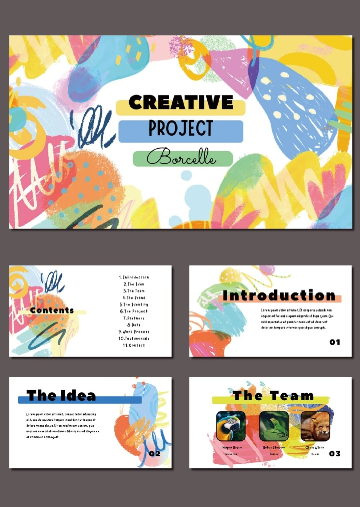
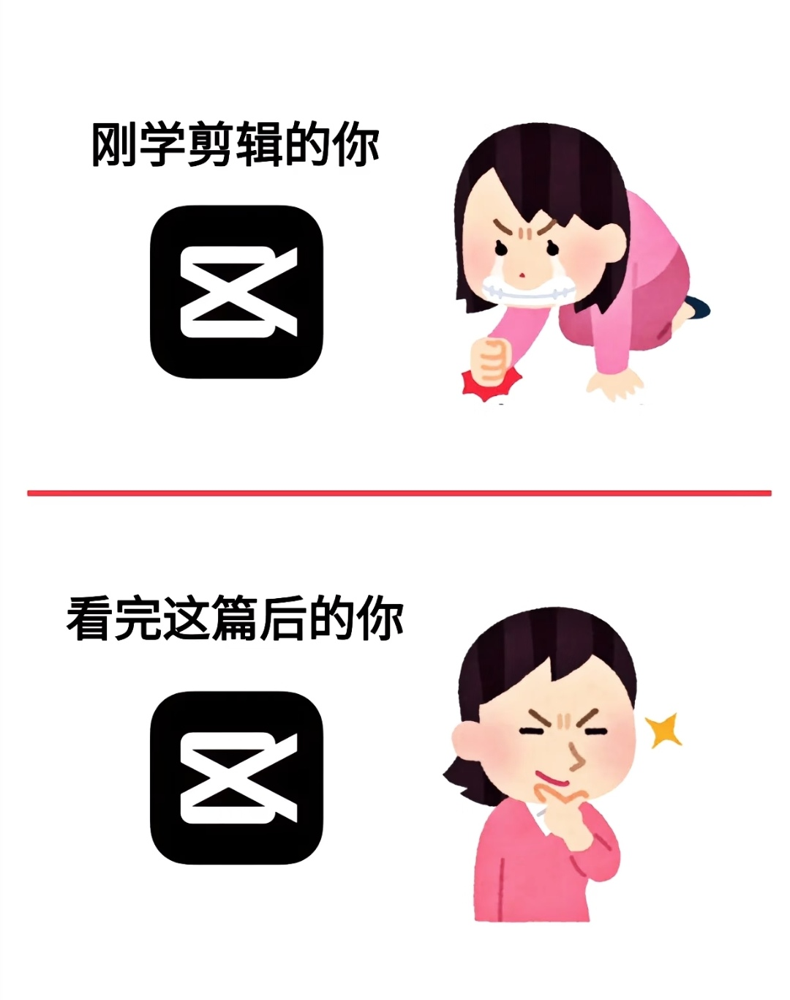

Skills
技能与证书
大数据管理与应用专业在读，方向偏数据分析：从数据采集、清洗、标注，到统计建模与可视化表达
数据分析
Python 数据处理
pandas / NumPy，数据爬取、清洗与处理
熟练 · 自评
数据清洗与规范
缺失值/口径核查、统一编码入库
熟练 · 自评
NLP 文本分析
LDA 主题建模、情感分析
掌握 · 自评
数据标注
逐帧目标框选与属性标注、自检与交叉核对
熟练 · 自评
R 语言
多元统计分析与建模
掌握 · 自评
SQL 与数据库
数据库原理与应用、结构化查询
掌握 · 自评
数据挖掘与深度学习
课程学习与项目应用基础
了解 · 自评
用这些技能做过的事
- 旅游评论研究（队长）：参与爬取携程平台西湖景区 1 万余条游客评论，独立完成数据清洗与处理和 NLP 部分（游客情感研究、LDA 主题研究），总结消极情感来源并提出景区服务改进建议。
- ESG 数据采集与清洗：完成 A 股、港股上市公司 ESG 数据采集与清洗，覆盖环境、社会、公司治理三大模块 20+ 项标准化指标，定性披露统一转 Y/N 标记，定量指标核对计量口径，按编码规范完成多批次数据入库归档。
- 道路视频数据标注：面向自动驾驶场景，按统一规范对车道线、车辆、行人、交通标志等目标逐帧框选与属性标注，处理视频数百段，并自检与交叉核对修正漏标、误标。
- 茶饮数据研究（"三创"挑战赛）：用 Python 爬取微博、淘宝、京东等公开茶饮数据共 2 万余条，采用 LDA 主题建模与情感分析挖掘用户需求痛点，并完成小程序 UI 界面搭建。
办公与表达
Office 办公软件
熟练使用 Word、Excel、PowerPoint，能够完成文档排版、数据整理与表格统计， 已取得计算机二级《MS Office 高级应用与设计》证书。
Word
Excel
PowerPoint
语言能力
英语 CET-6，能够阅读英文资料与技术文档，可完成英文信息的检索与整理。
英语 CET-6
英文资料检索
表达与创作
PPT 设计与制作
掌握 PPT 内容结构化呈现方法，能够将复杂信息简化为清晰的视觉表达。 擅长使用 SmartArt 图表、基础动画和过渡效果，能制作风格统一的学术汇报和商业演示文稿。 注重排版的可读性和视觉舒适度，避免过度设计。


视频剪辑处理
具备基础的视频剪辑能力，可以完成素材拼接、字幕添加和简单调色。 熟悉剪辑节奏把控，能制作 3-5 分钟的短视频作品。 了解常用视频格式和压缩参数，保证输出质量与文件大小的平衡。
证书与荣誉
技能证书
- 计算机二级《MS Office 高级应用与设计》证书
- 大学英语六级（CET-6）
- 一定的视频剪辑能力
竞赛与荣誉
- 校级学业奖学金
- 湖北大学商学院第二届全国职业规划大赛成长赛道三等奖
- 第十六届"三创"挑战赛省级二等奖
工具箱
Python
pandas
NumPy
R
SQL
LDA 主题建模
情感分析
数据标注
Excel
PPT
HTML / CSS
JavaScript 基础
视频剪辑
页面上标注的熟练程度为个人自评，具体水平可以参考「用这些技能做过的事」里的项目与实习经历。